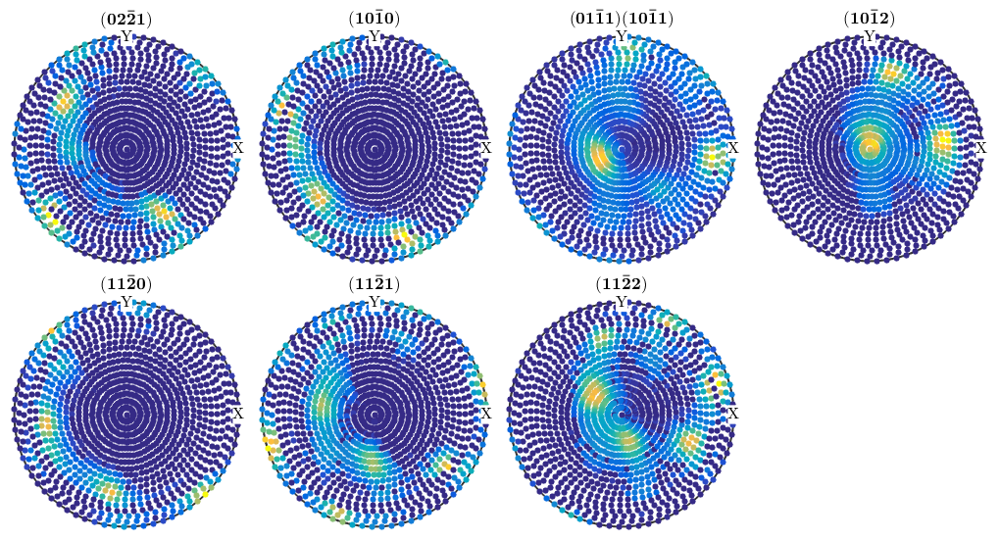
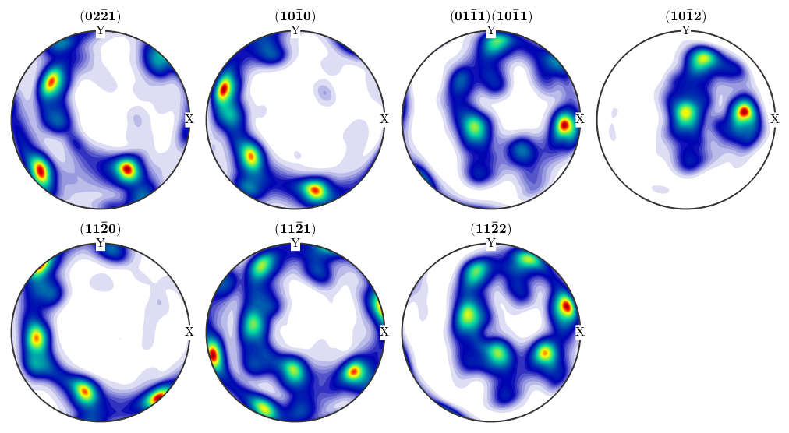
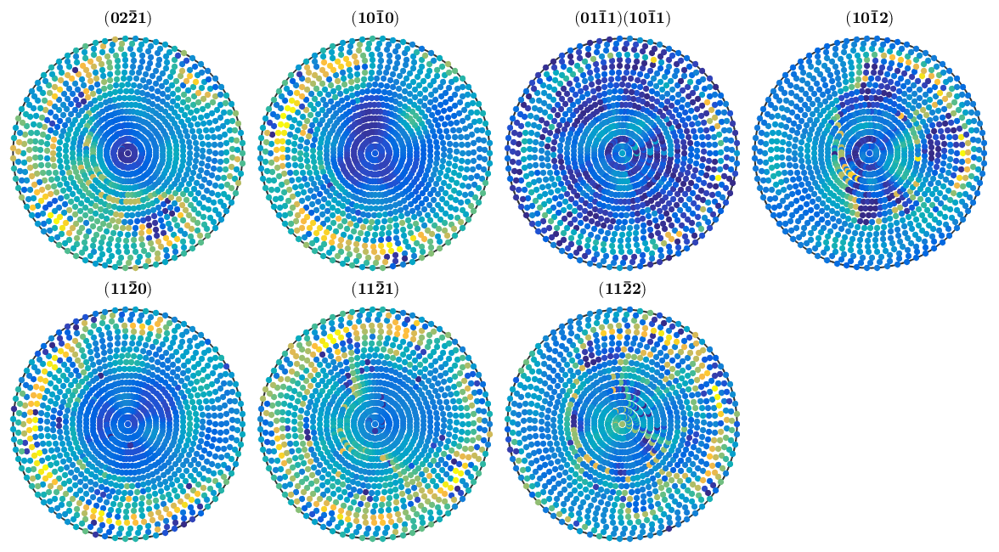
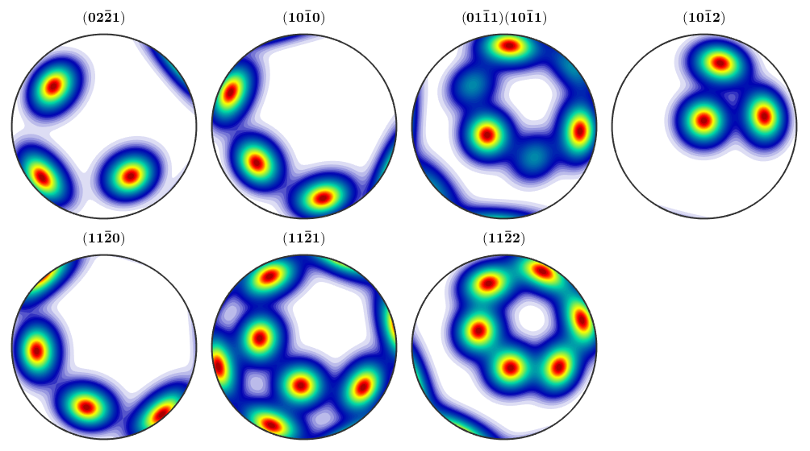
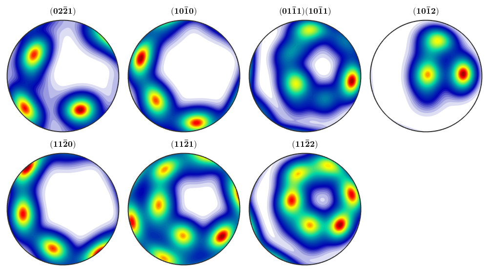
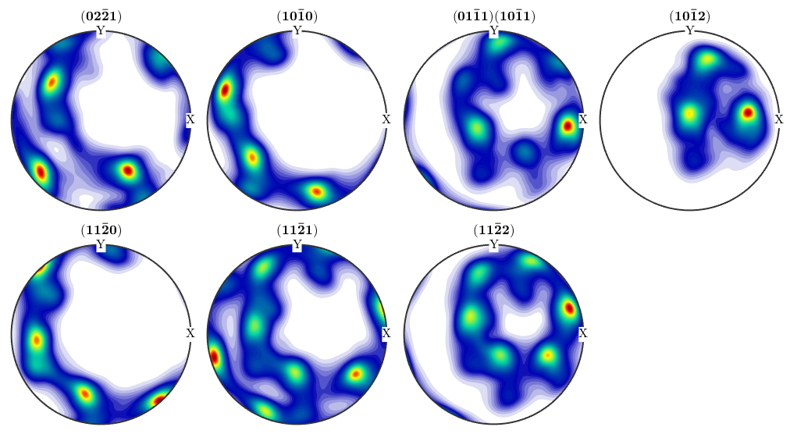
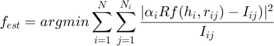

This page describes how to use MTEX to estimate an ODF from pole figure data.
| On this page ... |
| ODF Estimation |
| Error analyis |
| Discretization |
| Zero Range Method |
| Ghost Corrections |
| Theory |
Starting point of any ODF reconstruction is a PoleFigure object which can be created e.g. by
mtexdata dubnaSee interfaces for more infomations how to import pole figure data and to create a pole figure object.
% plot pole figures
plot(pf)
ODF estimation from a pole figure object is done by the function calcODF. The most simplest syntax is
odf = calcODF(pf)
------ MTEX -- PDF to ODF inversion ------------------
Call c-routine
initialize solver
start iteration
error: 7.7539E-01 5.7317E-01 3.5061E-01 2.0710E-01 1.7558E-01 1.6249E-01 1.5329E-01 1.4843E-01 1.4458E-01 1.4200E-01 1.3991E-01
Finished PDF-ODF inversion.
error: 1.3991E-01
alpha: 7.7654E+01 7.1704E+00 1.0018E+02 9.7173E+01 4.9029E+01 6.5072E+01 1.4453E+02
required time: 13s
odf = ODF
crystal symmetry : Quartz (321, X||a*, Y||b, Z||c)
specimen symmetry: 1
Radially symmetric portion:
kernel: de la Vallee Poussin, halfwidth 5°
center: 19848 orientations, resolution: 5°
weight: 1
There are a lot of options to the function calcODF. You can specify the discretization, the functional to minimize, the number of iteration or regularization to be applied. Furthermore you can specify ghost correction or the zero range method to be applied. These options are discussed below.
You may want to verify that the pole figures are reproduced. Here is a plot of the computed pole figures.
plotPDF(odf,h,'antipodal','silent','superposition',c)
For a more quantitative description of the reconstruction quality one can use the function calcError to compute the fit between the reconstructed ODF and the measured pole figure intensities. The following measured are available:
calcError(pf,odf,'RP',1)ans =
0.6847 0.7962 0.2231 0.2387 0.5833 0.6133 0.4652
In order to recognize bad pole figure intensities it is often usfull to plot difference pole figures between the normalized measured intensities and the recalculated ODF. This can be done by the command PlotDiff.
plotDiff(pf,odf)
Assuming you have drived two ODFs from different pole figure measurements or by ODF modelling. Then one can ask for the difference between both. This difference is computet by the command calcError.
% define a unimodal ODF with the same modal orientation odf_model = unimodalODF(calcModes(odf),'halfwidth',15*degree) % plot the pole figures plotPDF(odf_model,h,'antipodal','superposition',c) % compute the difference calcError(odf_model,odf)
odf_model = ODF
crystal symmetry : Quartz (321, X||a*, Y||b, Z||c)
specimen symmetry: 1
Radially symmetric portion:
kernel: de la Vallee Poussin, halfwidth 15°
center: (136°,36°,203°)
weight: 1
ans =
0.4672

In MTEX the ODF is approximated by a superposition of up to 10,000,000 unimodal components. By exact number and position of these components, as well as its shape can be specified by the user. By default the positions are chosen equispaced in the orientation space with 1.5 times the resolution of the pole figures and the components are de la Vallee Poussin shaped with the same halfwidth as the resoltion of the positions.
Next an example how to change the default resolution:
odf = calcODF(pf,'resolution',15*degree) plotPDF(odf,h,'antipodal','silent','superposition',c)
------ MTEX -- PDF to ODF inversion ------------------
Call c-routine
initialize solver
start iteration
error: 7.7540E-01 6.2888E-01 5.0182E-01 4.1174E-01 3.5202E-01 3.1694E-01 3.0000E-01 2.9144E-01 2.8643E-01 2.8344E-01 2.8156E-01
Finished PDF-ODF inversion.
error: 2.8156E-01
alpha: 7.9038E+01 7.1459E+00 9.7637E+01 1.0892E+02 4.9603E+01 6.4625E+01 1.3932E+02
required time: 1s
odf = ODF
crystal symmetry : Quartz (321, X||a*, Y||b, Z||c)
specimen symmetry: 1
Radially symmetric portion:
kernel: de la Vallee Poussin, halfwidth 15°
center: 736 orientations, resolution: 15°
weight: 1
 Beside the resolution you can use the following options to change the default discretization:
If the flag zero_range is set the ODF is forced to be zero at all orientation where there is a corresponding zero in the pole figure. This technique is especially usfull for sharp ODF with large areas in the pole figure beeing zero. In this case the calculation time is greatly improved and much higher resolution of the ODF can be achived.
In the following example the zero range method is applied with a the treshhold 100. For more options to control the zero range method see the documentation of zero_range or plot_zero_range.
odf = calcODF(pf,'zero_range') plotPDF(odf,h,'antipodal','silent','superposition',c)
------ MTEX -- PDF to ODF inversion ------------------
applying zero range method to (02-21)...... - reduction: 4594 / 19848
applying zero range method to (10-10)...... - reduction: 2595 / 19848
applying zero range method to (01-11)(10-11)...... - reduction: 2595 / 19848
applying zero range method to (10-12)...... - reduction: 2305 / 19848
applying zero range method to (11-20)...... - reduction: 2215 / 19848
applying zero range method to (11-21)...... - reduction: 2109 / 19848
applying zero range method to (11-22)...... - reduction: 2027 / 19848
Call c-routine
initialize solver
start iteration
error: 4.4290E-01 2.2148E-01 1.6514E-01 1.5403E-01 1.4907E-01 1.4629E-01 1.4418E-01 1.4270E-01 1.4139E-01 1.4032E-01 1.3928E-01
Finished PDF-ODF inversion.
error: 1.3928E-01
alpha: 7.8423E+01 7.3800E+00 9.9737E+01 9.5158E+01 5.0474E+01 6.6577E+01 1.4213E+02
required time: 5s
odf = ODF
crystal symmetry : Quartz (321, X||a*, Y||b, Z||c)
specimen symmetry: 1
Radially symmetric portion:
kernel: de la Vallee Poussin, halfwidth 5°
center: 2027 orientations, resolution: 5°
weight: 1

Ghost correction is a technique first introduced by Matthies that increases the uniform portion of the estimated ODF to reduce the so called ghost error. It applies especially useful in the case of week ODFs. The classical example is the SantaFe model ODF. An analysis of the approximation error under ghost correction can be found here
ODF estimation in MTEX is based upon the modified least squares estimator. The functional that is minimized is

A precise description of the estimator and the algorithm can be foun in the paper Pole Figure Inversion - The MTEX Algorithm.
| DocHelp 0.1 beta |